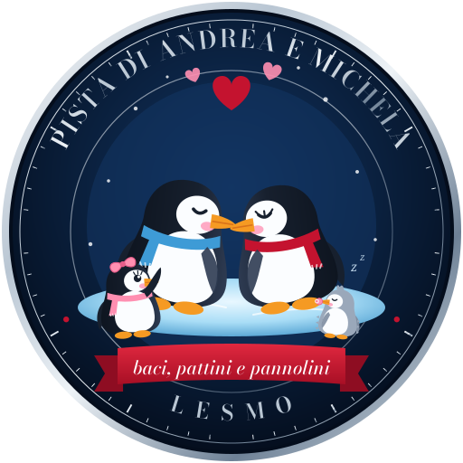

Ciao Michela e Andrea! Installiamo l'app della pista
Segui i passi in ordine sull'iPad. Ci vogliono circa 10 minuti. Spunta ogni passo quando l'hai fatto.
Collega l'iPad a internet
Serve solo per installare e per i futuri aggiornamenti: dopo l'app funziona anche senza rete. Wi-Fi o hotspot del telefono.
Aggiungi l'app alla schermata Home
In Safari tocca Condividi (in alto a destra, il quadrato con la freccia in su) → Aggiungi alla schermata Home.
Se compare l'interruttore Apri come app web lascialo acceso. Poi tocca Aggiungi.
Non trovi la voce? Nel menu Condividi scorri in basso, oppure tocca "Modifica azioni" e aggiungila.
Apri l'app dalla Home e lasciale scaricare la voce
Chiudi Safari e apri Pista Lesmo dalla schermata Home. Alla prima apertura scarica annunci e musiche: nella schermata di avvio, sotto il pulsante, aspetta la scritta verde "Pronta anche senza internet ✔".
Attenzione: l'app sulla Home ha la sua memoria, separata da Safari. Usa sempre l'icona, mai Safari.
Schermo sempre acceso e batteria
Impostazioni → Schermo e luminosità → Blocco automatico → Mai
Impostazioni → Batteria → Modalità risparmio energetico → spenta
Tieni l'iPad sempre in carica durante l'apertura.
Se l'iPad si blocca, l'app si ferma e gli annunci dei pinguini non partono.
Volume, silenzioso e notifiche
Apri il Centro di Controllo (scorri giù dall'angolo in alto a destra):
• campanella non barrata (silenzioso spento) · • Full immersion / Non disturbare spento · • volume alto.
Poi tocca qui per provare (con le casse collegate):
Consigliato: Accesso guidato (blocca l'iPad dentro l'app)
Così nessuno esce dall'app per sbaglio e lo schermo non si spegne.
Impostazioni → Accessibilità → Accesso guidato → attiva, poi Impostazioni codice (scegli un codice) e Blocco schermo → Mai.
Ogni giorno: apri l'app, premi 3 volte il tasto in alto (o il tasto Home) → Avvia. Per uscire: 3 volte di nuovo + codice.
Ogni giorno
Apri Pista Lesmo → AVVIA GIORNATA → scegli che tempo fa. Se il tempo cambia: pagina Oggi → Cambia meteo.
Importante: l'app deve restare aperta davanti. Se apri un'altra app (WhatsApp, YouTube…) gli annunci si fermano finché non torni.
Apri l'app adessoUna volta a settimana: backup
Nell'app: Impostazioni → Backup → Fai il backup → Condividi o salva. Scegli WhatsApp (manda a Leonardo) oppure Salva in File. L'app te lo ricorda dopo 7 giorni.
Tutto pronto! Buona stagione sul ghiaccio ⛸️